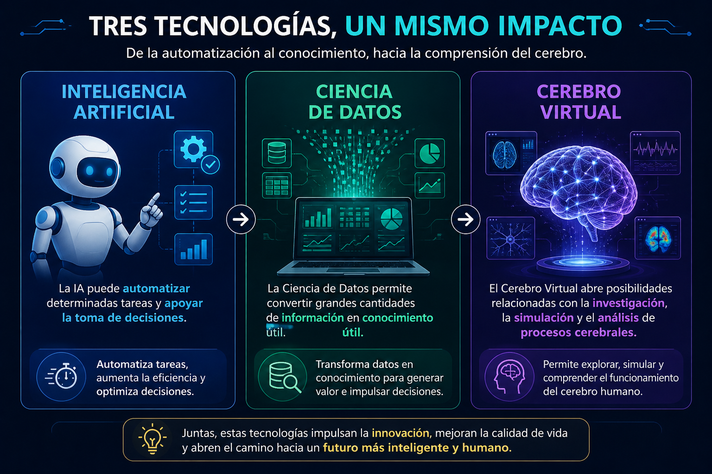

La IA y la ciencia de datos
Cerebro virtual
Nombres:
- Erick Santiago Martinez Caicedo
- Alejandro Rojas Cárdenas
- Angie Vanesa Morales Caycedo
- Julian Alejandro Calderon Nieto
Años 50-80 — Origen
Tras la Segunda Guerra Mundial varios profesionales y científicos como Alan Turing se preguntaron si una máquina podría pensar y en 1956 un grupo de investigadores se reunió en Dartmouth con la idea de que cualquier proceso de inteligencia humana podría describirse y simularse con precisión mediante una máquina así nació el término Inteligencia Artificial o también conocido como IA aunque la tecnología de la época era demasiado limitada para cumplir esa promesa.
Años 90-2010 — Nace la ciencia de datos
Mientras el Internet crece y los costos de almacenamiento disminuyen se generan volúmenes de datos, y las empresas se dan de cuenta de que si bien poseen la información carecen de la capacidad para interpretarla y es que esto ha dado lugar a la ciencia de datos, una combinación de estadística y programación diseñada para transformar ese océano de datos en decisiones prácticas.
Años 2010-2020 — El boom del Deep Learning
Las tarjetas gráficas, creadas originalmente para videojuegos resultaron ser perfectas para entrenar redes neuronales utilizando millones de puntos de datos simultáneamente y es que al combinarse con enormes bases de datos de imágenes y texto que permitió que la IA reconozca finalmente el habla, los rostros y el lenguaje con precisión, generando que las grandes empresas empiecen a integrar modelos de Ia en sus servicios.
Actualidad (2026) — De asistente a agente
El volumen y la complejidad de los datos empresariales crecen tan rápidamente que ya no basta con que la IA simplemente sugiera respuestas; las empresas necesitan que las tareas se ejecuten de forma completa y autónoma. En consecuencia, el año 2026 marca la transición hacia los «agentes de IA»: sistemas que operan de principio a fin bajo supervisión humana.
CEREBRO VIRTUAL
2005 — Nace el Blue Brain Project
Los neurocientíficos podrían estudiar neuronas individuales pero no comprendían cómo generaban el pensamiento de forma colectiva. Henry Markram se asoció con IBM porque simular un cerebro completo requiere una potencia de cálculo que solo una supercomputadora podía ofrecer y así comenzó el primer intento serio de reconstruir digitalmente un cerebro.
2009-2013 — Se vuelve un proyecto global
Simular el cerebro humano completo resultaba demasiado ambicioso para un solo laboratorio y es que se necesitaban más países, más dinero y más datos neurocientíficos combinados y por eso España lanzó su propia rama (Cajal Blue Brain) y en 2013 la Unión Europea decide financiarlo como proyecto insignia dándole presupuesto a gran escala.
2024 — El proyecto cierra
Para reconstruir un cerebro humano completo, célula por célula, resultó ser mucho más complejo de lo que se pensaban en 2005 ya que tras casi 20 años, el Blue Brain Project concluye sin lograr ese objetivo final, pero dejando como legado modelos digitales de partes del cerebro que otros científicos siguen usando.
Actualidad (2026) — El problema es la energía
Ya hoy en día el entrenamiento de la IA mediante chips de silicio consume cantidades grandísimas de electricidad, mientras que el cerebro humano realiza tareas más complejas con apenas 20 vatios por eso en consecuencia los científicos están yendo más allá de la simple replicación cerebral basada en software y ya comienzan a simular el cerebro en el propio hardware utilizando chips que integran neuronas reales o materiales que funcionan de manera análoga para que haya la misma eficiencia.
Contexto Global
Desde un contexto global, la forma de ver la nueva neurociencia, es primeramente impresionante las expectativas tan grandes que se tiene de los cerebros virtuales. Lograr la simulación de las redes neuronales, impulsos eléctricos y proteínas que rodean todo un sistema complejo como el propio ser humano. También es un gran miedo el como este tipo de procesos puede replicar la conciencia, los recuerdos y las decisiones diarias en una máquina compleja. Uno de los mejores ejemplos para representar este tipo de cosas es el caso de la Simulación Cerebral.
En marzo de 2026, la empresa Eon Systems Logró replicar y emular el comportamiento de la mosca en un espacio digital 3D, la empresa logró replicar más 140 mil redes neuronales y proyectarlas en un programa, para ver cómo se comporta la mosca en estos espacios, este aparte de ser un avance grandísimo para la ciencia el cual también permite expandir horizontes a la iniciación de proyectos para simular el cerebro u otros sistemas mucho más complejos, como, el cuerpo humano completo. Estas tecnologías en el siglo pasado eran solo simuladores visuales. Solo imagina poder lograr ver el mundo desde una persona virtual o incluso poder tener otra vida virtual.
Siguiendo con los cerebros virtuales todo esto tiene una ventaja aún mayor en el área de la medicina. Gracias a estos simuladores ya permite analizar el comportamiento de algunas enfermedades neurológicas como la esquizofrenia o el Alzheimer, tal como lo menciona Allen Institute de Seattle por medio de supercomputadoras (fugaku). El cual logró replicar la corteza del cerebro de un ratón y por medio de una simulación lograron ver cómo el cerebro de la rata se comporta a ataques epilépticos y enfermedades como el Alzheimer, ellos lograron observar minuciosamente como la enfermedad ataca y se propaga por medio de las redes neuronales y el cerebro del ratón. Como se puede evidenciar en áreas como la psicología y la medicina logran aprovechar la emulación de un cerebro para la evolución de tal vez, curas contra enfermedades motrices o por parte de la psicología, mejores diagnósticos y entendimiento de trastornos mentales de lo que actualmente y por siglos han sido casos de estudio complejos.
Pero como lo mencioné al principio, también existe el miedo de que este tipo de sistemas logre replicar o lograr el control de la humanidad. Aunque con los sistemas de IA y cerebros digitales se ve lejos, es una realidad que amerita tener un poco de preocupación. Un caso excepcional de eso es el caso de TRIBE V2, tal como lo menciona la misma página de META que es una gran herramienta que logra percibir estímulos como, sonidos, lenguaje y la vista, ganadora de Insights from the Algonauts 2025 quedando de primer lugar como el mejor proyecto presentado del año.
Este sistema tiene como objetivo para los creadores de contenido y medios en general, ver cómo el contenido producido como, un video, un sonido o incluso una imagen interactúa con nuestro cerebro.
En el marketing digital la palabra Hook o gancho funciona para describir una introducción que es específicamente atractiva o la forma en la que “atrapa” al receptor, entre mejor sea el gancho aumenta la probabilidad de que el video sea más visto o tenga más visitas, la gente en redes sociales siempre lucha por tu atención y este tipo de estrategias como el “hook” ayudaban a creadores de contenido a llegar más lejos en su contenido. Meta la gran compañía creo TRIBE V2 única y específicamente para que por medio del cerebro virtual mejore la productividad de este gancho y también mejore la calidad del contenido, no para hacer un mejor contenido sino para enganchar más tiempo a la pantalla al usuario.
La problemática de este sistema surge en la gran era de consumismo y competición de atención que tenemos que como lo dice el Instituto para el futuro de la educación, hoy en día para la gente y para los adolescentes en específico el poner atención a clases o un trabajo por más de 5 minutos es toda una competencia, esto es debido al contenido masivo de corta duración que tenemos que genera una desviación en el cerebro haciendo que la gente tenga una deficiencia considerable en su calidad de atención y su forma de aprendizaje.
Entender que hay todo un estudio y una ingeniería en la comercialización de la atención de los jóvenes para volver la adicción de la costumbre como el scroll infinito y gente con más de 10 horas en aplicaciones como tik tok o Instagram es un gran paso para ver que esta problemática no es solo culpa de los usuarios sino también de las empresas dueñas de esas aplicaciones. Finalmente es así como la IA y las redes neuronales o cerebros virtuales son toda una innovación tecnológica que brinda muchas oportunidades a todo el mundo y genera un contexto de prosperidad y exploración en el mundo de la ciencia como también nos puede dar un vistazo terrorífico de como el avance de la tecnología puede crear y replicar sino también ser usado para controlar masas gigantescas en muy poco tiempo.
Entorno y Habitabilidad
Dentro del marco de la Cuarta Revolución Industrial la Inteligencia Artificial (IA) y la Ciencia de Datos han ganado relevancia debido a su capacidad de procesar información y crear sistemas que puedan resolver tareas cada vez más complejas. El Cerebro Virtual tiene algo en común con este entorno tecnológico desde otro punto de vista porque según Rueda et al. (2021) los cerebros virtuales representan un nuevo enfoque al estudio del cerebro a través de modelos digitales los cuales ofrecen tanto nuevas oportunidades científicas como desafíos. Por lo tanto estas tres esferas pueden verse como elementos interconectados del mismo proceso tecnológico: la Ciencia de Datos permite analizar la información, la IA la utiliza para almacenar la información y hacer predicciones mientras que el Cerebro Virtual ayuda a modelar ciertos procesos relacionados con el cerebro. Así por ejemplo la información relacionada con la actividad cerebral puede ser procesada usando la Ciencia de Datos para encontrar ciertos patrones luego la IA puede usar los datos encontrados para crear modelos predictivos y un Cerebro Virtual puede usar modelos computacionales para simular ciertos comportamientos. Los resultados de la simulación pueden ser analizados nuevamente usando la Ciencia de Datos y por lo tanto estas tres esferas se complementan entre sí.
Ventajas
- La capacidad de analizar grandes cantidades de información: Esta tecnología permite procesar la información, organizarla y buscar patrones que son utilizados por la inteligencia artificial para hacer predicciones y aprender.
- La automatización y optimización de procesos: La inteligencia artificial puede llevar a cabo algunas operaciones más rápido y proporcionar la toma de decisiones mientras que el análisis de datos permite determinar dónde están los problemas y cómo mejorar las cosas.
- El Cerebro Virtual aporta además la posibilidad de realizar simulaciones computacionales: Existe la posibilidad de realizar simulaciones computacionales utilizando El Cerebro Virtual: La Comisión Europea (2018) describe el uso de El Cerebro Virtual para simular redes neuronales y estudiar diversos fenómenos relacionados con diferentes trastornos neurológicos.
- La interdisciplinariedad: Estas tecnologías nos brindan la oportunidad de aprovechar el conocimiento proveniente de la informática, las matemáticas, las estadísticas, la neurociencia y muchas otras ciencias, promoviendo así nuevas investigaciones e innovaciones.
Dificultades
- La calidad y disponibilidad de los datos: El correcto funcionamiento de la Inteligencia Artificial y la ciencia de datos implica tener una cantidad adecuada de información correcta, de lo contrario los resultados obtenidos podrían estar distorsionados.
- La privacidad y el uso responsable de la información: El uso de grandes cantidades de datos podría crear ciertos problemas relacionados con la protección de datos privados.
- La complejidad del cerebro humano: El cerebro virtual no es una copia exacta del cerebro humano sino solo un modelo.
- La necesidad de formación y adaptación profesional: La cooperación de las tecnologías de Inteligencia Artificial, ciencia de datos y cerebro virtual requiere conocimientos de varias áreas diferentes. Uno de los retos es que necesitamos profesionales de diferentes campos que puedan unir sus conocimientos y comprender cómo se podría hacer.
Impacto en el campo profesional
Esta interacción de 3 áreas trae consigo algunos cambios en el campo profesional ya que cambia tanto las herramientas disponibles como el conjunto de habilidades necesarias para trabajar.

(OpenAI, 2026)
Impacto profesional: Esta interacción de 3 áreas trae consigo algunos cambios en el campo profesional ya que cambia tanto las herramientas disponibles como el conjunto de habilidades necesarias para trabajar. Aparecen nuevas oportunidades profesionales las cuales están relacionadas con el análisis de datos, la Inteligencia Artificial, la investigación científica, el modelado computacional, la neuroinformática y el desarrollo de sistemas inteligentes. Según CEPAL (2026) el rol del talento humano y las habilidades en relación con la Inteligencia Artificial y los datos se vuelve cada vez más importante en el desarrollo tecnológico de América Latina. Además de la aparición de nuevos trabajos el impacto profesional consiste en un cambio en las tareas y habilidades de los profesionales. Ellos tendrán que aprender a cooperar con herramientas de Inteligencia Artificial, interpretar los resultados obtenidos con la ayuda del análisis de datos y comprender los límites de los modelos computacionales.
En resumen el impacto combinado de estas tecnologías se puede ver en los siguientes tres grandes cambios: cambio en las tareas, la aparición de nuevas esferas profesionales y la necesidad de desarrollar nuevas habilidades.
Ejemplos Del Impacto En El Campo Profesional
A lo largo de la historia, los científicos de datos usaban hasta el 80% de su tiempo en tareas manuales de codificación; hoy gracias a la convergencia de la IA, los agentes autónomos y el modelado computacional, la profesión ha evolucionado hacia la estrategia de sistemas de extremo a extremo.
Uno de estos casos se evidencia actualmente cuando el profesional despliega agentes de IA autónomos y herramientas de Auto ML para no verse obligado a limpiar el dato manualmente, simplemente diseña las directrices éticas y lógicas para que sea la función del agente limpiar, detectar anomalías y probar sistemáticamente docenas de modelos predictivos en minutos; su trabajo cambia de pasar días escribiendo scripts en Python o SQL para detectar valores nulos, eliminar duplicados, normalizar textos y realizar ingeniería de características, a validar que los datos de entrada no generen sesgos o distorsiones críticas, claramente vemos cómo esta tecnología es un facilitador para el cumplimiento de los deberes presentes en este campo profesional.
Otro caso que podemos mencionar está relacionado al cerebro virtual mencionado anteriormente, mientras el análisis de datos se limitaba a modelos predictivos tradicionales (como regresiones lineales o clasificaciones básicas) proyectados en dashboards estáticos de Power BI o Excel, actualmente se trabaja directamente con infraestructura de supercomputación, utiliza herramientas avanzadas para procesar billones de puntos de datos de impulsos eléctricos; su rol no es solo analizar estadísticas del cerebro, sino estructurar las bases de datos gráficos vectoriales para que este cerebro logre realizar simulaciones de ataques epilépticos o el avance del alzheimer de manera tridimensional, el científico de datos simplemente se encarga de analizar los resultados de la simulación virtual para volver a optimizar los algoritmos utilizados.
Finalmente en este ejemplo podemos ver un nuevo reto impuesto a los profesionales de esta área debido a los avances tecnológicos, mientras en el pasado el éxito de un científico de datos se medía únicamente por la precisión matemática de su modelo aislado en su computadora local, luego del desarrollo de las tecnologías de la 4RI, escribir códigos ya no es una ventaja competitiva porque la IA genera códigos complejos al instante, el científico de datos en la modernidad debe dominar el pensamiento de sistemas MLOps (operaciones de machine learning); al implementar modelos de base predictivos como el programa desarrollado por Meta AI “TRIBE V2” se le obliga al profesional a liderar la toma de decisiones estratégicas de la infraestructura.
De estos ejemplos podemos concluir que este avance tiene impactos positivos como: la liberación de la carga operativa, aumentando la eficiencia ya que se tiene mayor velocidad de procesamiento y una automatización de pipelines, se eleva la estrategía del rol del profesional, generando una simulación computacional de alta complejidad y se ve como comienza a sobrepasar las barreras científicas causando una interdisciplinariedad, haciendo que se descubran nuevos patrones.
Sin embargo son más los impactos negativos en cuanto al desplazamiento laboral del profesional, comenzamos a hablar de una obsolescencia acelerada de habilidades técnicas, desplazando estas tareas básicas e incluso ocasionando pérdida de empleos junior; se generan dilemas éticos como la ingeniería orientada a la manipulación de la atención del consumidor; adicionalmente se pueden producir problemas críticos de responsabilidad legal y sesgo algorítmico cuando se trabaja con modelos masivos autónomos ya que se complica la tarea de explicar por qué el algoritmo tomó una decisión específica, esto se denomina como “opacidad algorítmica” que se usa para indicar cuando se pierde la interpretabilidad del modelo.
Referencias
Cerebro virtual
Agencia SINC. (2024). Entre el desafío científico y los nuevos enigmas: así concluye una década de investigación del cerebro. https://www.agenciasinc.es/Reportajes/Entre-el-desafio-cientifico-y-los-nuevos-enigmas-asi-concluye-una-decada-de-investigacion-del-cerebro
Perera Molligoda Arachchige, A. S. (2023). The Blue Brain Project: Pioneering the frontier of brain simulation. AIMS Neuroscience. https://doi.org/10.3934/Neuroscience.2023024
École Polytechnique Fédérale de Lausanne. (s.f.). Blue Brain Project. https://bluebrain.epfl.ch/
Ecoosfera. (2026, 21 de abril). Copian cerebro de mosca y ahora vive en una simulación. https://ecoosfera.com/sci-innovacion/cerebro-mosca-emulacion-digital/
Digital Too. (2026, 12 de marzo). La mosca virtual con cerebro real: así nació la primera IA embodied. https://www.digitaltoo.com/2026/03/12/mosca-virtual-cerebro-real-emulacion-embodied/
Agencia EFE. (2026, 21 de marzo). Dispositivo inspirado en el cerebro humano podría cambiar el futuro de la inteligencia artificial. Prensa Libre. https://www.prensalibre.com/vida/tecnologia/dispositivo-inspired-en-el-cerebro-humano-podria-cambiar-el-futuro-de-la-inteligencia-artificial/
Parolari, M. N. (2026, 11 de mayo). Científicos lograron fusionar 70.000 neuronas vivas con componentes electrónicos flexibles. Gizmodo en Español. https://es.gizmodo.com/cientificos-lograron-fusionar-70-000-neuronas-vivas-con-componentes-electronicos-flexibles-2000235480
Hostinger. (2026). Estadísticas de la inteligencia artificial en 2026. https://www.hostinger.com/es/tutoriales/estadisticas-y-tendencias-de-ia
Henry. (2026, 15 de junio). Tendencias en AI, data y desarrollo que van a marcar 2026. https://blog.soyhenry.com/tendencias-en-ai-data-y-desarrollo-que-van-a-marcar-2026/
Emprendedores.es. (2026, 16 de febrero). 10 tendencias en datos e IA que marcarán la competitividad empresarial en 2026. https://emprendedores.es/inteligencia-artificial/tendencias-datos-ia-que-marcaran-competitividad-empresarial-2026/
IBM. (2026, 21 de enero). Las tendencias que marcarán la IA y la tecnología en 2026. https://www.ibm.com/es-es/think/news/ai-tech-trends-predictions-2026
Microsoft Source LATAM. (2025, 8 de diciembre). Qué viene en IA: 7 tendencias a seguir en 2026. https://news.microsoft.com/source/latam/features/ia/que-viene-en-ia-7-tendencias-a-seguir-en-2026/
MIT Sloan Review México. (2026, 16 de enero). Cinco tendencias de IA y ciencia de datos que marcarán 2026. https://mitsloanreview.mx/data-ia-machine-learning/cinco-tendencias-de-ia-y-ciencia-de-datos-que-marcaran-2026/
Comisión Económica para América Latina y el Caribe. (2025). Superar las trampas del desarrollo de América Latina y el Caribe en la era digital: El potencial transformador de las tecnologías digitales y la inteligencia artificial. CEPAL. https://www.cepal.org/es/publicaciones/80841-superar-trampas-desarrollo-america-latina-caribe-la-era-digital-potencial
Comisión Económica para América Latina y el Caribe. (2026). Índice Latinoamericano de Inteligencia Artificial (ILIA) 2025: Hallazgos principales, IA aplicada y talento humano. CEPAL. https://www.cepal.org/es/publicaciones/86007-indice-latinoamericano-inteligencia-artificial-ilia-2025-hallazgos-principales
Comisión Europea. (2019). La plataforma Virtual Brain simula el encéfalo para revelar los orígenes de las enfermedades. CORDIS. https://cordis.europa.eu/article/id/125259-the-virtual-brain-simulates-the-brain-to-reveal-the-origins-of-disorders/es
Evers, K., & Salles, A. (2021). Desafíos epistémicos de los gemelos digitales y los cerebros virtuales: Perspectivas desde la neuroética fundamental. SCIO. Revista de Filosofía, 21, 27–53. https://doi.org/10.46583/scio_2021.21.846
Miao, F., & Holmes, W. (2023). Guía para el uso de IA generativa en educación e investigación. Organización de las Naciones Unidas para la Educación, la Ciencia y la Cultura. https://www.unesco.org/es/articles/guia-para-el-uso-de-ia-generativa-en-educacion-e-investigacion
Organización de las Naciones Unidas para el Desarrollo Industrial. (2021). ¿Qué es la cuarta revolución industrial? Industrial Analytics Platform. https://iap.unido.org/index.php/es/articles/que-es-la-cuarta-revolucion-industrial
Meta AI. (2026, 26 de marzo). Introducing TRIBE v2: A predictive foundation model trained to understand how the human brain processes complex stimuli. Meta AI. https://ai.meta.com/blog/tribe-v2-brain-predictive-foundation-model
Scotti, P. S., & Tripathy, M. (2025, 14 de agosto). Insights from the Algonauts 2025 winners. arXiv. https://arxiv.org/html/2508.10784v1
Gutiérrez Argüelles, C. (2026, 21 de abril). “Clonaron” el cerebro de una mosca y ahora vive dentro de una computadora: Este es el resultado. Ecoosfera. https://ecoosfera.com/sci-innovacion/cerebro-mosca-emulacion-digital/
France 24 Español. (2025, 25 de noviembre). Así funciona el cerebro digital “más preciso” creado con un supercomputador. France 24.
Dueweke, L. (2025, 17 de noviembre). One of world’s most detailed virtual brain simulations is changing how we study the brain. Allen Institute. https://alleninstitute.org/news/one-of-worlds-most-detailed-virtual-brain-simulations-is-changing-how-we-study-the-brain/
Arfadia Digital Marketing Agency. (2026). What is hook? Compelling marketing opener explained. Arfadia. https://www.arfadia.com/glossary/hook
Delgado, P. (2025, 13 de agosto). Atención en declive: Cómo la tecnología afecta nuestra capacidad de concentración. Observatorio del Instituto para el Futuro de la Educación. https://observatorio.tec.mx/atencion-en-declive-como-la-tecnologia-afecta-nuestra-capacidad-de-concentracion
Sanz-Leon, P., Knock, S. A., Woodman, M. M., Domide, L., Mersmann, J., McIntosh, A. R., & Jirsa, V. K. (2013). The Virtual Brain: a simulator of primate brain network dynamics. Frontiers in Neuroinformatics, 7, 10. https://www.semanticscholar.org/paper/The-Virtual-Brain%3A-a-simulator-of-primate-brain-Sanz-Leon-Knock/c0d276f4cff85c2120a90c87b32eb5ad5b0f30bb?utm_source=direct_link
Wang, H. E., & Jirsa, V. K. (2025). Virtual Brain Inference (VBI): Probabilistic inference and deep neural density estimators on whole-brain models. Nature Computational Science, 5(3), 201-215. https://www.biorxiv.org/content/10.1101/2025.01.21.633922v3
Scotti, P. S., & Tripathy, M. (2025). Insights from the Algonauts 2025 challenge. arXiv preprint arXiv:2508.10784. https://paulscotti.substack.com/p/insights-from-the-algonauts-2025?utm_campaign=post-expanded-share&utm_medium=web